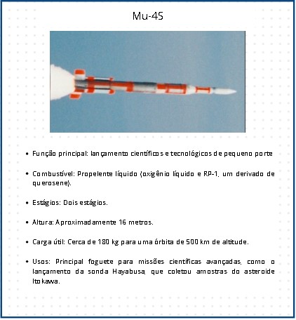
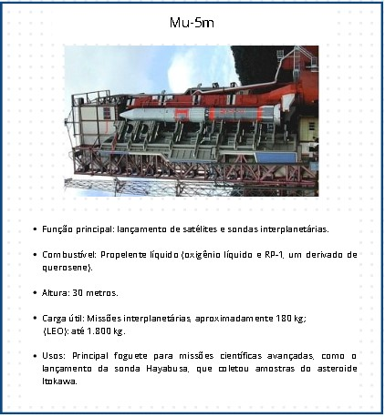

Legado da Família Mu
O legado da família de foguetes Mu é marcado por sua contribuição essencial ao programa espacial japonês, especialmente em lançamentos de satélites científicos, meteorológicos e de telecomunicações. Desenvolvido pela ISAS (Instituto de Pesquisa Espacial do Japão), a série Mu foi crucial para o Japão desenvolver independência no espaço. Os foguetes Mu também participaram de missões interplanetárias e científicas.
 Voltar